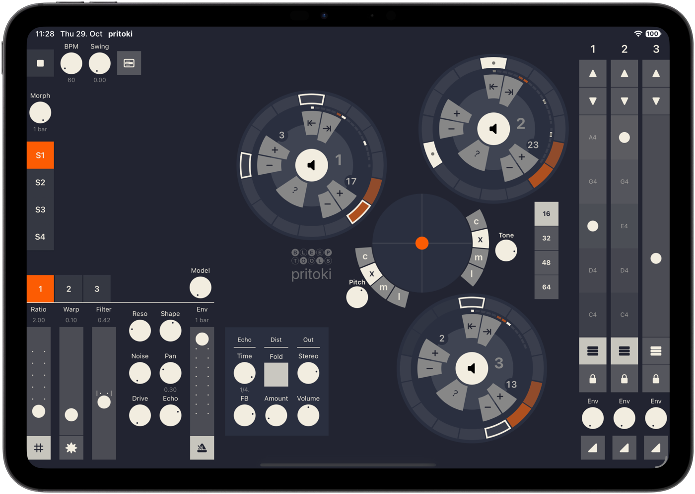

pritoki
One voice. Three tracks. Endless in-betweens.
Rhythmic synthesizer for iPad & Mac · Standalone + AUv3

Every hit is a blend of all three tracks, in sound and in rhythm. Slide between them and groove and timbre move as one. Land between a kick and a bass. Let one rhythm take the shape of another. Get lost on purpose.

Generate a groove. Then make it yours.
Each of the three tracks has its own sequencer ring with up to 64 steps. Set steps, pulses and rotation, and a Euclidean pattern appears right away. Tap in your own hits on top, give single steps their own pitch, or roll the dice so hits drop out at random and the loop never repeats exactly. Start and stop any track with one touch.

Blend and shape.
Move between the three tracks with a single finger. Pick from several blend modes, separately for pitch and for timbre, to change how the tracks combine. Add glide and smoothing.
Capture a moment. Morph to the next.
Save four snapshots of the whole instrument: sound, patterns and steps. Jump between them, or let them morph into each other over time. It's a sketchbook for trying ideas, and a set of moves you can play live.
Change the model. Change the character.
One knob reshapes how the voice is built. Turn Model up and the voice goes from tones that bend and twist each other into one sound, to a layered voice where you also hear each of them on its own, in harmonic tune. You get a new family of tones without starting over, and because Model is part of every snapshot, it morphs too.

Play it like an instrument.
Each track has a pitch fader that can lock to a scale, so melodic bass lines fall under your fingers. You can also play each track from its own MIDI channel with a keyboard or another sequencer.
Add grit. Let it ring.
Use Warp to bend the tone harder, turn on Hard for a gated, broken edge, and add drive, a bitcrusher or a wavefolder. Send any track into a tempo-synced tape-style echo, and its tails ring on after the hit has ended.
Play it on its own. Plug it into your setup.
Open pritoki as a standalone app on iPad and Mac and just play, with its own clock and tempo. Or load it as an AUv3 instrument in AUM, GarageBand, Logic and other hosts, where it follows the host's tempo and saves its sound, patterns and snapshots with your project.
Get notified at launch
One email when pritoki is out. No spam.
Want to try it now? Join the beta